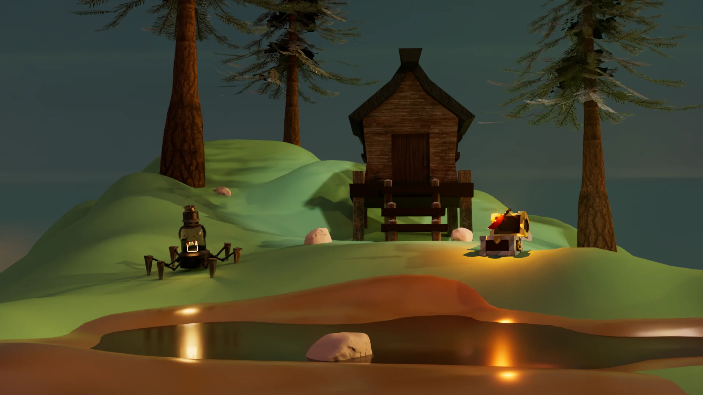
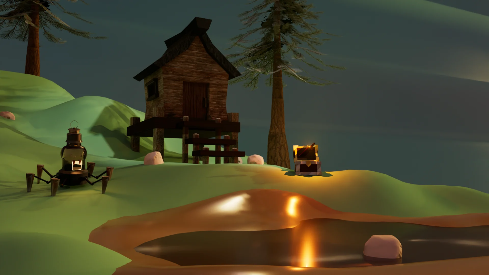
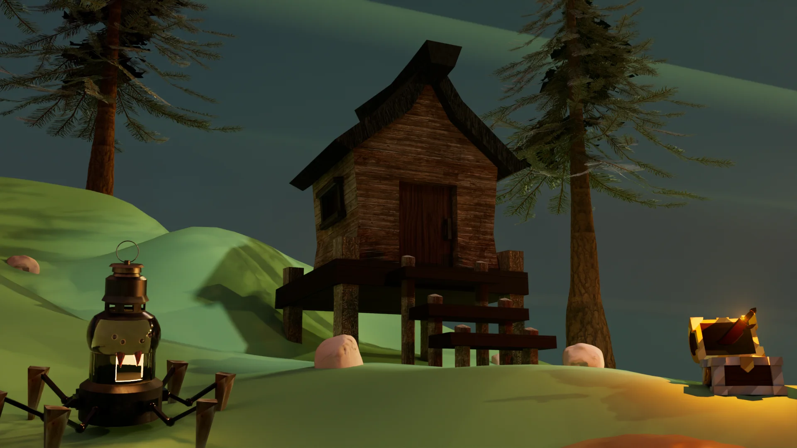
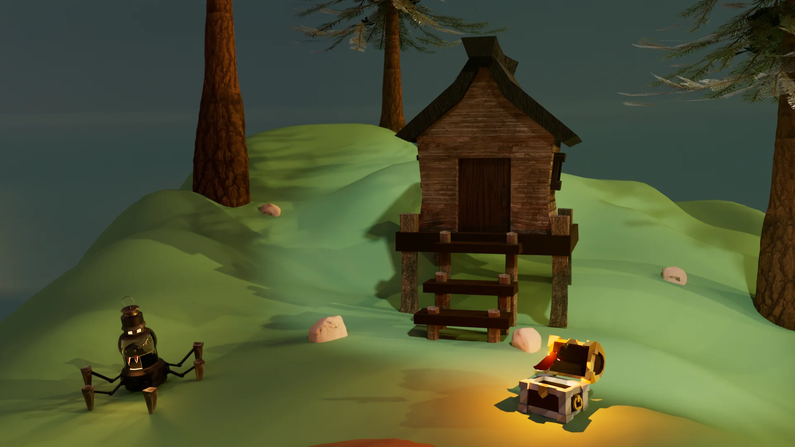
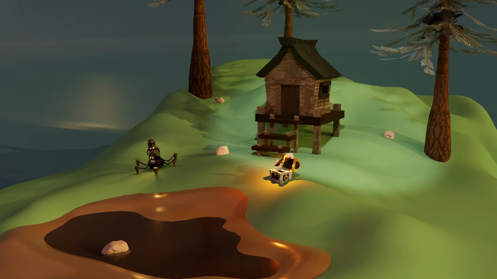
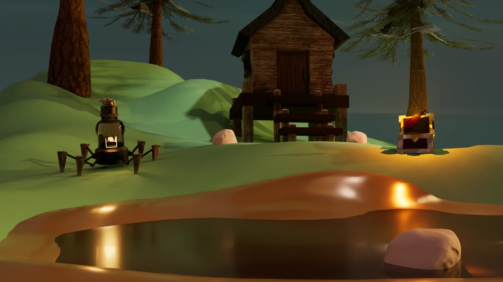
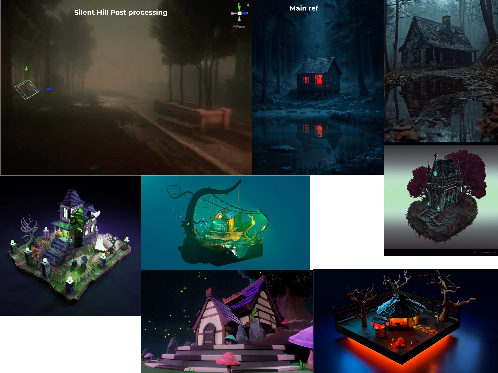

Project type:
Modeling, sculpting and texturing project in Maya.
Project description:
This is the finalized version of my Witch Shack Diorama, which I refined and assembled in Maya using assets created in previous projects. My focus was on enhancing the overall composition and lighting to effectively showcase each asset within the environment. I aimed to create a clean, well-lit turntable render that highlights the details and silhouettes of the diorama from all angles.
Date:
April 14 - May 4, 2025
Role:
3D Sculptor, Texture Painter, and 3D Modeler.
Project highlight:
Renders from different angles:






Reference:

Reflection:
During the finalization of my Witch Shack Diorama, I encountered a few technical and visual challenges that helped me deepen my understanding of lighting and scene setup. One issue was that the wood textures on the witch shack appeared too dark, even with high-intensity lighting. To resolve this, I increased the material exposure of each wood texture, which allowed the details to be more clearly visible in the render.
Another challenge arose while preparing the turntable animation. Initially, I attempted to rotate the entire diorama, but due to the complexity of grouped objects, some elements—such as the Spider Lantern and Dragon Dagger—did not rotate correctly. To work around this, I animated the camera along a path instead. However, this approach introduced a new issue: at certain angles, the curved plane backdrop failed to fully cover the scene, resulting in visible gaps.
To address this, I experimented with replacing the backdrop with a hemisphere and rotating it to follow the camera. While this improved coverage, it also caused inconsistent lighting in the background, which could be visually distracting. Despite these challenges, the process helped me learn effective problem-solving techniques for rendering complex scenes.